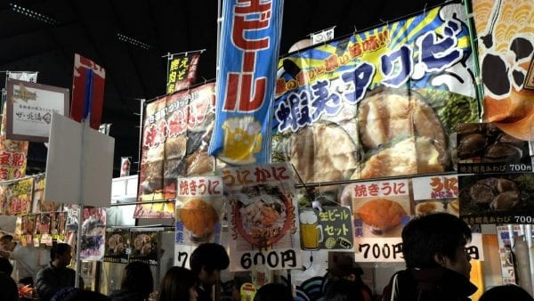

NGÀY LỄ/ LỄ HỘI NHẬT BẢN
Ở Nhật hàng năm có 15 ngày lễ (tại thời điểm 2014)gọi là "Ngày lễ quốc dân" được qui định trong hiến pháp. Trước đây, có ngày nghỉ lễ để tổ chức các lễ hội nhưng sau chiến tranh các ngày này đã bị bãi bỏ, do đó không còn ngày nghỉ dành cho lễ hội theo luật nữa. Nếu ngày lễ trùng vào ngày chủ nhật, thì sẽ được nghỉ bù vào ngày thứ hai của tuần kế tiếp. Ngoài ra, tùy theo năm, sẽ có trường hợp ngày thường nằm xen giữa 2 ngày lễ. Khi đó, ngày thường đó sẽ được xem như là ngày nghỉ quốc dân. Hơn nữa, từ năm 2016 trở đi, ngày 11/8 sẽ là "Ngày của núi", và được xem như 1 ngày lễ trong năm.
Để có thể khám phá được sâu sắc nhất về văn hóa ẩm thực Nhật Bản thì chúng ta không thể bỏ qua những lễ hội ẩm thực Nhật Bản. Các lễ hội ẩm thực Nhật Bản thường được tổ chức vào mùa xuân, trong điều kiện thời tiết rất dễ chịu. Chúng ta có thể kể đến 4 lễ hội ẩm thực nổi tiếng ở Nhật Bản đó là: lễ hội Furusato, lễ hội Bayside Nikupaku, lễ hội rượu Sake mùa xuân Kyoto, lễ hội bia Kyushu. Lễ hội Furusato được tổ chức tại thủ đô Tokyo (thường vào 2 ngày 10, 11 tháng 3 hằng năm) với nhiều hoạt động hấp dẫn xoay quanh chủ đề ẩm thực truyền thống. Đến với lễ hội ẩm thực này, bạn sẽ được đón xem trực tiếp những cuộc thi ẩm thực của nhiều đầu bếp. Đồng thời được thưởng thức các món ăn độc đáo mang hương vị truyền thống của Nhật Bản như: sushi, sashimi, Shabu-shabu,…
Ngập tràn trong không khí của lễ hội Furusato
Lễ hội Bayside Nikupaku (17, 18 tháng 3) là một trong những lễ hội nổi tiếng dành cho các tín đồ đam mê các món ăn được chế biến từ thịt. Đến đây, bạn sẽ như lạc vào thiên đường ẩm thực với hàng loạt các món ăn được bày biện ven phố với mùi hương thơm ngát. Những khay thịt đỏ au, được tẩm ướp gia vị hấp dẫn. Bạn hãy thử tưởng tượng ngay món xà lách cuộn thịt ngọt bùi cực thích. Lễ hội Bayside Nikupaku chính là một sự kiện tuyệt vời cho những “fan cuồng thịt nướng” và chắc chắn sẽ là những trải nghiệm thú vị khi chúng ta ghé thăm đất nước mặt trời mọc.
Thưởng thức thịt nướng tại Lễ hội Bayside Nikupaku
Lễ hội rượu Sake mùa xuân Kyoto được tổ chức vào 28, 29 tháng 4, lễ hội này thu hút đông đảo du khách thập phương. Với sự góp mặt của hơn 200 thương hiệu rượu sake từ nhiều nơi trên đất nước Nhật Bản, cùng với đó là những gian hàng ẩm thực truyền thống nổi tiếng. Bạn sẽ thưởng thức rượu “tẹt ga” mà không phải tốn phí. Đặc biệt, còn được xem những màn tỉ thí uống rượu của những người tham dự. Lễ hội rượu Sake được xem là một phần trong văn hóa của người Nhật Bản mà bạn không nên bỏ qua.
Thưởng thức những loại rượu sake thượng hạng
Bên cạnh lễ hội rượu thì lễ hội bia Kyushu cũng được xem là một trong những nét đẹp ẩm thực của Nhật Bản. Lễ hội này được tổ chức thường niên vào cuối tháng 5. Trong lễ hội này sẽ có đầy đủ các loại bia từ các nhà máy như Yamaguchi Beer, Kirishima Kogem, Kirishima Beer, và một số loại bia khác. Bạn sẽ được thưởng thức những loại bia thượng hạng nhất, vui chơi và hòa mình vào không khí sôi động của buổi lễ.
| Ngày Đầu Năm | 1/1 |
| Ngày Thành Nhân | Thứ 2 của tuần thứ 2 của tháng 1 |
| Ngày Quốc Khánh | 11/2 |
| Ngày Xuân Phân | 19/3~22/3( 1 ngày trong khoang thời gian này ) |
| Ngày Chiêu Hòa | 29/4 |
| Ngày Hiến Pháp | 3/5 |
| Ngày Canh Xanh | Ngày Thiếu Nhi |
| Ngày Của Biển | Ngày Của Núi 11/8(Từ 2016) |
| Ngày Kính Lão | Thứ hai tuàn thứ 3 của tháng 7 |
| Ngày Thu Phân | 22/9~24/9( 1 ngày trong khoang thời gian này ) |
| Ngày Thể Thao | Thứ 2 tuần thứ 2 của tháng 10 |
| Ngày Văn Hóa | 3//11 |
| Ngày Lao Động | 13/11 |
| Sinh Nhật Thiên Hoàng | 23/12 |
Email liên hệ
bmtuan.20it1@vku.udn.vn